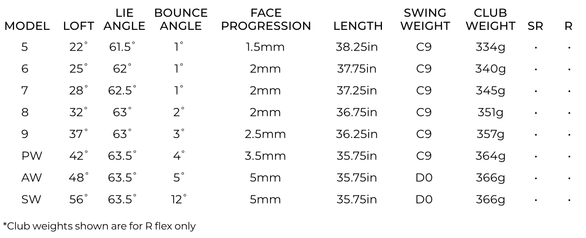

XXIO PRIME ROYAL EDITION men irons
Reap the rewards of experience with these irons crafted to meet the needs of golfers with moderate swing speeds. Our titanium face and new Speed Grooves provide higher ball speed and launch.
TECHNOLOGY
REBOUND FRAME
Rebound Frame is an alternating pattern of stiff and flexible zones within the XXIO Prime RE Driver that focuses more of your impact energy into the golf ball. It increases ball speed and distance on every strike, especially center-face impacts.
STAANF Face Material
STAANF is a highly elastic and very light density titanium which helps increase overall COR and reposition weight deeper in each clubhead for a higher launch with faster ball speeds.
Flat Cup Face
For off-center strikes with the Driver, Fairway Woods, and Hybrids, the new Flat Cup Face expands the high COR region of each club face, increasing your ball speed and distance.
DRAW BIAS BULGE DESIGN
This new face curvature on the Driver, Fairway Woods, and Hybrids is slightly closed at the heel and open near the toe. The resulting gear effect helps produce a desirable right-to-left shot shape—even if the club face is open at impact.
WEIGHT PLUS
Weight Plus is a counterbalancing technology that places weights in the end of each shaft, located behind your hands as you grip the club. That grip weight helps push the club head up through your backswing for a more consistent top of swing position. And as you begin the downswing, the weight brings your hands into position, keeping your arms closer to your body for a squarer face at impact.
STAR FRAME
XXIO Prime RE’s Driver uses a Star Frame rib structure to support a much thinner sole than previous generations. That thinner sole allowed for extra mass low and deep, producing a higher launch and adding forgiveness off the tee.
LIGHTWEIGHT CONSTRUCTION
The new XXIO Prime SP-1100K Royal Edition Shaft, with TORAYCA T1100G carbon fiber and NANOALLOY resin, is extremely lightweight to help produce more swing speed and distance with its smooth, easy-to-swing profile. The softer tip section also makes it easier to close the club face and strike the ball square.
PRIME ROYAL EDITION men irons Specs
PRIME ROYAL EDITION men irons 3 - 5 / SW PRICE
2 999 € / 3 299 CHF / 32 599 SEK / 2 699 £